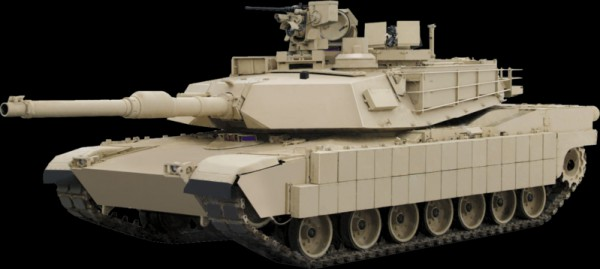
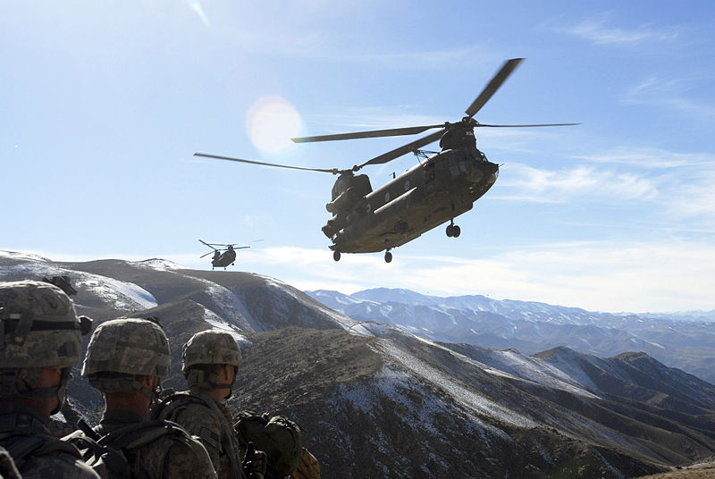
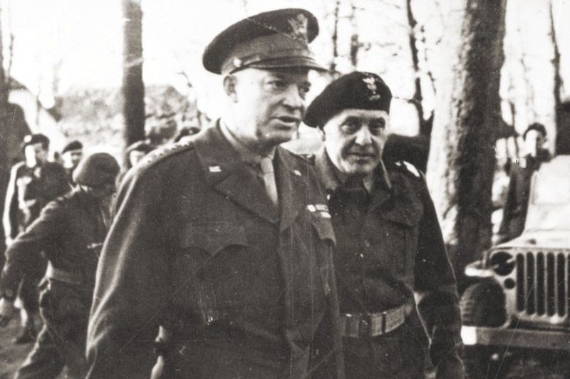
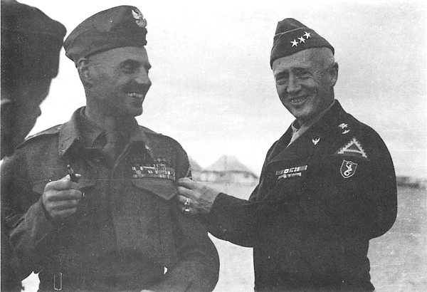
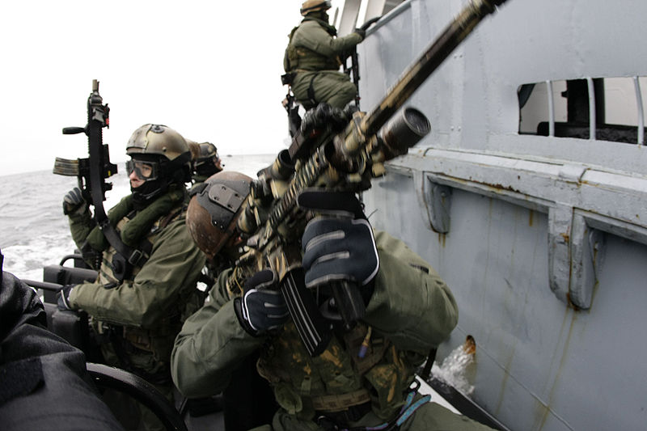
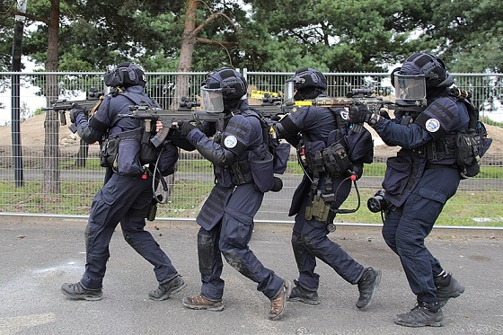
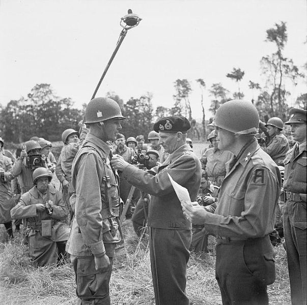
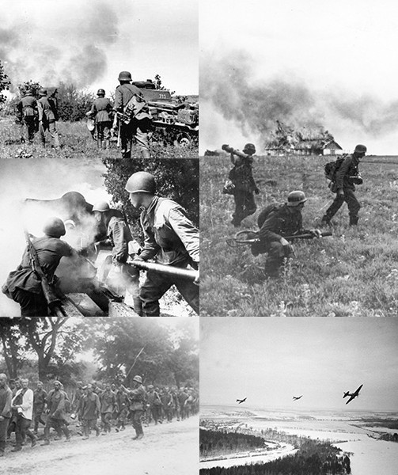

Nie każde dane to informacja, nie każda informacja to wiedza, wiedzieć nie znaczy zrozumieć, a zrozumienie to jeszcze nie mądrość.
- Clifford Stoll
Krótkie informacje o pojeździe znajdziesz w przypinkach poniżej
|  |
M1 Abrams jest jednym z najlepiej sprawdzonych czołgów czasów obecnych. Nazwa czołgu wzięła się od imienia generała Creightona Abramsa - dowódcy 37 Batalionu Pancernego Armii Stanów Zjednoczonych w czasie II wojny światowej. Zaprojektowany został przez korporację Chrysler Defence, która została wykupiona przez General Dynamics. Abrams przeszedł chrzest bojowy w trakcie operacji "Pustynna Burza". Do dziś ceniony jest przez wiele państw. Żaden Abrams nie został nigdy zniszczony w wyniku trafienia z wrogiego czołgu, jednakże pewna liczba została uszkodzona w zasadzkach przy użyciu granatników przeciwpancernych oraz ppk krótkiego zasięgu (jak np. rosyjski RPG-7, RPG-18 lub AT-14 „Kornet”). Poza tym podczas operacji Pustynna Burza kilka Abramsów zostało omyłkowo trafionych przez rakiety AGM-114 Hellfire wystrzelone z amerykańskich śmigłowców AH-64 Apache, na skutek czego odniosły uszkodzenia, ich załogi jednak zdołały przeżyć(Źródło: Wikipedia) |
Krótkie informacje o pojeździe znajdziesz w przypinkach poniżej
|  |
Chinook to helikopter transportowy wytworzony przede wszystkim na potrzeby amerykańskiego wojska. Inwestorom zależało przede wszystkim na możliwości szybkiego przetransportowania dużego ładunku. CH47 przydał się również jako jednostka do transportu żołnierzy na miejsce operacji. Służył do transportu rannych i dostarczania zaopatrzenia. Kosztem prędkości ogarniczono jego zdolności obronne do minimum. Z powodu bycia łatwym celem dla granatników i samolotów wroga CH47 wykonuje manewry zwykle tuż przed obszarem na którym prowadzona jest walka. Wykorzystywany jest jednak do przeprowadzania operacji ratunkowych. Ma za sobą piękną i długą historię. Do tego czasu jest niezastąpionym "żołnierzem" armii Stanów Zjednoczonych. (Źródło: Wikipedia i wiedza własna) |
.jpg)
Krótkie informacje o dowódcy znajdziesz w przypinkach poniżej
|  |
W latach 1910-14 studiował filologię na Uniwersytecie Lwowskim. W tym czasie odbył szkolenie w Związku Strzeleckim. Służbę w Legionach Polskich uniemożliwiło mu powołanie do armii austriackiej. Podczas I wojny światowej walczył m.in. na froncie rosyjskim w Karpatach i froncie włoskim w Alpach. Po kapitulacji państw centralnych 11 listopada 1918 r. zdezerterował i przedostał się do Krosna, gdzie wstąpił do Wojska Polskiego.. Gen. Maczek był zwolennikiem prowadzenia wojny w sposób nowoczesny, za pomocą cechujących się dużą manewrowością i szybkością samodzielnych pancernych związków taktycznych, które zapewniły m.in. Niemcom zwycięstwo w kampanii 1939 r. Jego zdaniem, rola piechoty na polach bitew wyraźnie zmalała od czasów I wojny światowej; jej efektywność zależała od wsparcia m.in. lotnictwa i broni pancernej. (Źródło: LINK) |
Krótkie informacje o dowódcy znajdziesz w przypinkach poniżej
|  |
George Smith Patton IV – generał United States Army, syn generała George’a Pattona. Absolwent West Point, Patton służył w czasie konfliktów w Korei i Wietnamie jako dowódca 11. Regimentu Kawalerii Pancernej. Urodził się na Rancho Lake Vineyard, w pobliżu miasta San Gabriel w Kalifornii. Jego ojcem był George Smith Patton senior, matką: Ruth (Wilson) Patton. Pochodził z rodziny z silnymi tradycjami wojskowymi, jego przodkowie walczyli w wielu wojnach, m.in. w czasie rewolucji amerykańskiej, a także w czasie wojny secesyjnej po stronie Konfederatów. W dzieciństwie marzył o tym, by zostać bohaterem wojennym i generałem. Czytał książki i opracowania historyczne oraz wojskowe, cierpiał jednak na dysleksję, co spowodowało późniejsze trudności z nauką.(Źródło: Wikipedia) |
Krótkie informacje o jednostce znajdziesz w przypinkach poniżej
|  |
Jednostka Wojskowa GROM im. Cichociemnych Spadochroniarzy Armii Krajowej(Jednostka Wojskowa 2305) sformowana w odpowiedzi na postrzelenie przez terrorystów 30 marca 1990 w Bejrucie dwóch Polaków, w odwecie za pomoc polskiego rządu w emigracji Żydów z ZSRR do Izraela JW GROM przygotowana jest do prowadzenia szerokiej gamy operacji specjalnych: działań ratunkowych, akcji bezpośrednich, działań antyterrorystycznych (ang. CT). Zamysłem naczelnym, deklarowanym także obecnie była szeroka gama operacji ratunkowych (np. NCE, CSAR, HR), szczególnie na terytoriach wrogich państw, oraz innych objętych wojną, kryzysem itd. Jej tworzenie rozpoczęto w 1990 r., dzięki pomocy Amerykanów, wykorzystując najlepsze doświadczenia zagraniczne, zwłaszcza Stanów Zjednoczonych Ameryki, Wielkiej Brytanii oraz Niemiec (GSG 9). (Źródło informacji: Wikipedia) Sprawdź ranking sił specjalnych TUTAJ |
Krótkie informacje o jednostce znajdziesz w przypinkach poniżej
|  |
Podstawowe zadania to walka z terroryzmem lotniczym, tłumienie buntów więziennych, zatrzymania najniebezpieczniejszych przestępców oraz wsparcie oddziałów specjalnych Policji (GIPN i RAID) Do selekcji mogą zgłosić się ludzie do 32 lat zdolni wykonać 100 pompek, 300 brzuszków, 25 podciągnięć na drążku i szybkich wejść na linę. Na takich kandydatów czekają testy fizyczne: marsz z obciążeniem 8 km na czas, pływanie ze związanymi kończynami, skoki do wody, strzelanie z kbk na 200 m, strzelanie pistoletu na 50 m oraz testy psychiki i odwagi. Po przejściu tych konkurencji odbywa się rozmowa kwalifikacyjna z dowódcą jednostki. Selekcję przechodzi od 5 do 10% kandydatów. (Źródło: Wikipedia) Sprawdź ranking sił specjalnych TUTAJ |
Krótkie informacje o operacji znajdziesz w przypinkach poniżej
|  |
Operacja Market Garden - największa operacja z udziałem wojsk powietrznodesantowych, przeprowadzona przez aliantów we wrześniu 1944 roku na terytorium okupowanej Holandii. Operacja ta miała na celu rozdzielenie wojsk niemieckich i obejście od północy niemieckich umocnień obronnych zwanych linią Zygfryda, co miało umożliwić wejście do Zagłębia Ruhry i tym samym przyspieszyć koniec wojny. Kluczowym zagadnieniem było uchwycenie mostów na Renie i innych rzekach zanim Niemcy zdążą je zniszczyć. Aliantom udało się przejąć kontrolę nad pierwszymi mostami, ale ostatecznym rezultatem operacji była całkowita porażka, ponieważ nie zdobyto ostatniego mostu w Arnhem. Niemiecka kontrofensywa unicestwiła brytyjską I Dywizję Powietrznodesantową i spowodowała większe straty od tych, które alianci ponieśli podczas lądowania w Normandii. Ich klęska uważana jest za ostatnie zwycięstwo taktyczne Trzeciej Rzeszy. Odwrót Anglików z Oosterbeek, polegający na ponownej przeprawie przez Ren, osłaniali żołnierze polscy, którzy jedynie w niewielkiej liczbie mogli się ewakuować (nie było dla nich miejsca w łodziach przeprawowych) i w większości dostali się do niemieckiej niewoli. (Źródło informacji: Wikipedia)Więcej danych o operacji Market Garden znajdziesz TUTAJ(przeniesie Cię do tabeli) |
Krótkie informacje o operacji znajdziesz w przypinkach poniżej
|  |
Operacja Barbarossa - agresja III Rzeszy na Związek Socjalistycznych Republik Radzieckich(ZSRR) w trakcie II wojny światowej. Plan operacji był przygotowany i podpisany przez Adolfa Hitlera już 18 grudnia 1940 (dyrektywa nr 21). Pierwotnie przewidywano atak 15 maja 1941, ale z powodu obalenia proniemieckiego rządu księcia Pawła Niemcy musiały interweniować na Bałkanach, w Jugosławii, a także w Grecji, przełożono go więc na 22 czerwca 1941. Była to największa i najważniejsza operacja niemiecka w czasie wojny, której klęska zdecydowała ostatecznie o niemieckiej przegranej w całej wojnie. Walki na froncie wschodnim, gdzie realizowano operację „Barbarossa”, okazały się być jednymi z najbrutalniejszych i najbardziej wyniszczających bitew II wojny światowej. Nazwa planu „Barbarossa” wywodzi się od przydomku cesarza Fryderyka I Barbarossy. Teza: Hitler planował wcześniejsze zdobycie Moskwy, opóźnienie powstało już na początku akcji ze względu na wstrzymanie wymarszu wywołane planami interwencji Hitlera w Jugosławii oraz pomocy Mussoliniemu z brytyjską ofensywą w Grecji. (Źródło: Wikipedia) |
| Nazwa | JW GROM | SSG | GIGN | GSG 9 | GIS Italy |
| Miejsce | 10 | 9 | 8 | 7 | 6 |
| Rok założenia | 1990 | 1956 | 1974 | 1973 | 1977 |
| Przydomek | Cisi i skuteczni (The Unseen and the Silent) |
Morowe Berety | GIGN | GSG | Leatherheads |
| Siedziba | Warszawa, Polska | Tarbela, Pakistan | Satory, Yvelines, Francja | Sankt Augustin-Hangelar, Bonn |
Carabinieri |
| Motto | Strength and Honor for You, Fatherland | I am Vailant(Man Janbazam) | To enlist for life. (S’engager pour la vie) | - | - |
| Pełna nazwa | Jednostka Wojskowa Grupa Reagowania Operacyjno-Manewrowego |
Special Services Group | Groupe d’intervention de la Gendarmerie |
Grenzschutzgruppe 9 | Gruppo di intervento speciale |
| Nazwa | EKO Cobra | Marcos | Spetsnaz | SEAL Team Six | SAS |
| Miejsce | 5 | 4 | 3 | 2 | 1 |
| Rok założenia | 1978 | 1987 | 1949 | 1980 | 1941 |
| Przydomek | AS Gendarmerieeinsatzkommando GEK and As Eiansatzkommando Cobra |
Magarmach (Crocodiles) | Spetsnaz | DEVGRU | The regiment |
| Siedziba | Wiener Neustadt , Austria | Mumbai, Goa, Kochi Visakhapatnam i Port Blair | Khodinka, Moskwa | Dam Neck Annex, NAS Oceana, Virginia Beach, United States | London, Credenhill, Birmingham |
| Motto | - | The few the fearless | - | - | Who dares win |
| Pełna nazwa | (nie dotyczy) | The Marine Commando Force | (nie dotyczy) | The Unite States Naval Special Warfare Development group | The Special Air Services |
| Strony konfliktu | |
|---|---|
| Wielka Brytania Stany Zjednoczone Polska Kanada Holenderski Ruch Oporu |
III Rzesza |
| Dowódcy | |
| Dwight Eisenhower Bernard L. Montgomery Lewis H.Brereton Robert Urquhart James Gavin Stanisław Sosabowski Frederick Browning |
Gerd von Rundstedt Wilhelm Bittrich Walther Model |
| Siły | |
| Market: 34,6 tys. ludzi Garden: 50 tys. ludzi Razem: 84,6 tys. ludzi Pomocnicze ataki VIII i XII Korpusu, wsparcie lotnicze |
nieznane |
| Straty | |
| 15 130 - 17 200 żołnierzy | 3,3 tys. do 8tys. żołnierzy 30 czołgów 159 samolotów |